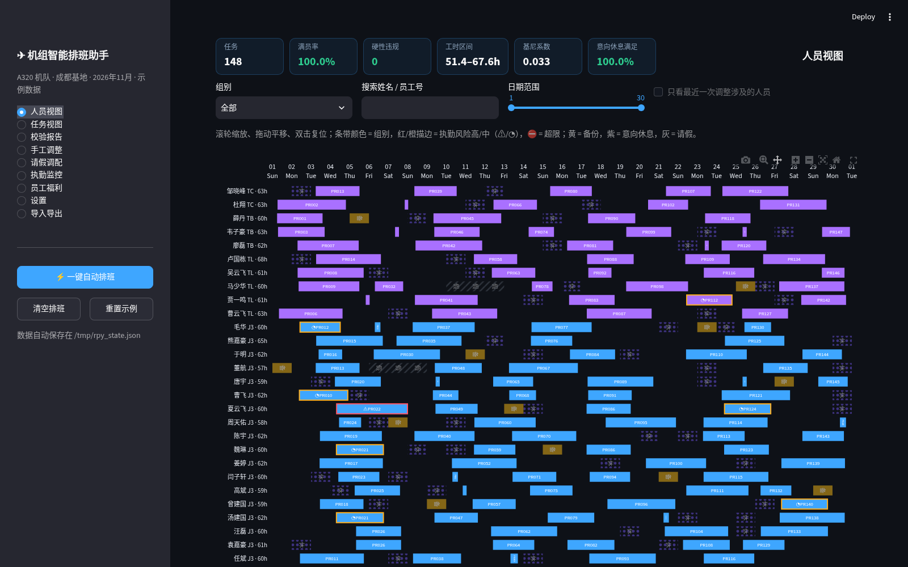
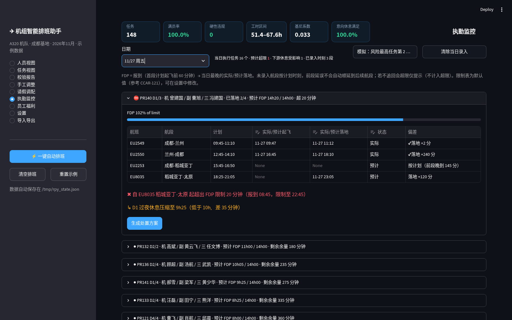
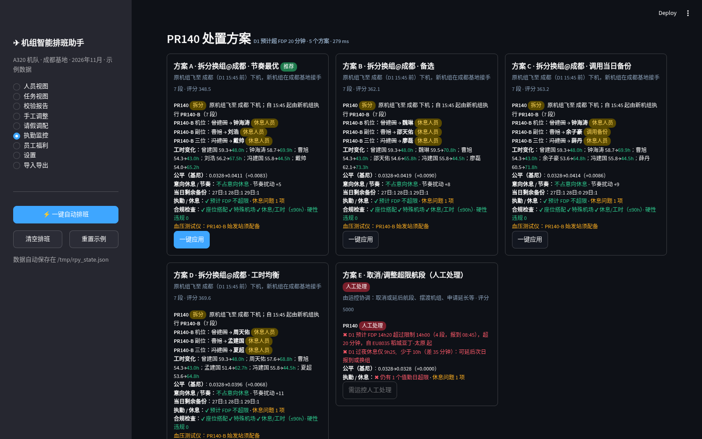
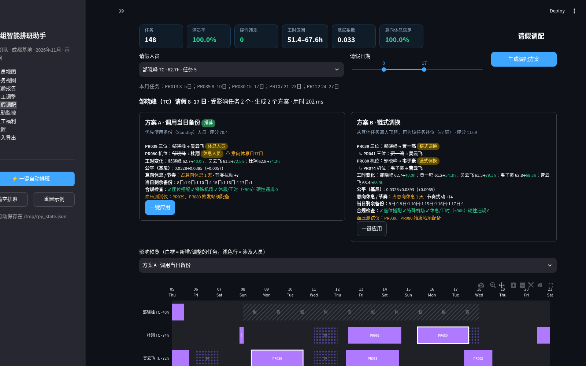
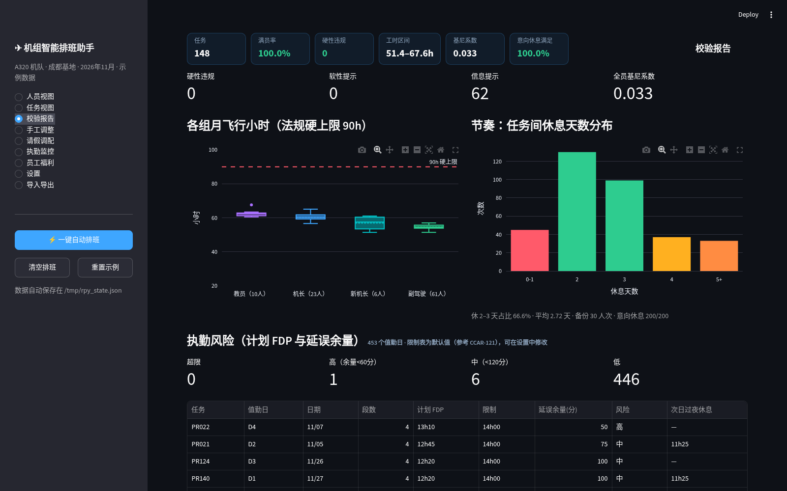
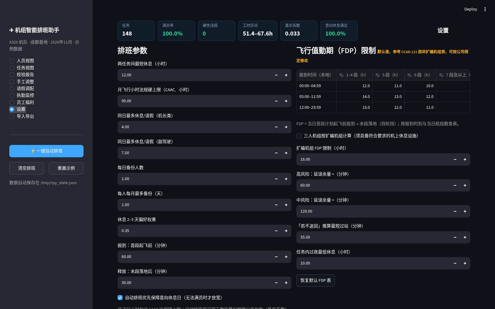

功能
⚡ 自动排班
贪心 + 局部改进 + 交换 + 置换链修复 + 削峰 + 备份分配；148 个任务满员、硬性违规 0，工时公平均衡（基尼约 0.033）。
✔ 合规校验
RE12 座位搭配、特殊机场授权、A321、新机长须教员、休息 ≥12h、CAAC 90h 硬上限、血压测试仪机场、FDP 限制表。
🗓 请假调配
3–5 个方案：调用备份 / 节奏最优 / 工时均衡 / 链式调换 / 人工兜底，影响指标、预览、一键应用与撤销。
⏱ 执勤监控
逐段录入实际/预计起飞落地，实时推算 FDP、余量、过夜休息与下游影响，生成拆分换组等处置方案。
📊 甘特图与报告
plotly 甘特图可缩放平移；工时分布、节奏、执勤风险面板与问题明细。
⇄ 与网页版互通
JSON 备份格式相同可互相导入；CSV 导出可直接用 Excel 打开；附命令行工具。
截图






本机运行
Mac
git clone https://github.com/jiqingan-web/crew-roster-py.git cd crew-roster-py python3 -m venv .venv source .venv/bin/activate pip install -r requirements.txt streamlit run app.py
Windows（PowerShell）
git clone https://github.com/jiqingan-web/crew-roster-py.git cd crew-roster-py py -m venv .venv .venv\Scripts\Activate.ps1 pip install -r requirements.txt streamlit run app.py
未安装 git 时可先下载 ZIP 解压，再执行除 git clone 外的命令。浏览器会打开 http://localhost:8501，需要 Python 3.9+。
命令行
python -m roster sample -o sample.json python -m roster autofill sample.json -o filled.json python -m roster report filled.json --csv out/ python -m roster leave filled.json --pilot 毛华 --days 9-14 python -m roster fdp filled.json --date 27 --pr PR140 --leg "EU2550=16:45,18:10,act" --leg "EU8035=-,23:05"
与网页版对照
| 项目 | 结果（两版一致） |
|---|---|
| 示例数据 | 100 人 / 148 任务 / 1895h，逐字段相同 |
| 自动排班 | 满员 100%、硬性 0；148 个任务机组与 30 个备份日完全相同；工时 51.4–67.6h，基尼 0.0328 |
| 请假 / 执勤处置方案 | 方案名称、顺序、评分、变更内容与推荐项相同 |
| 速度 | 自动排班网页版约 1.3 s，Python 约 4 s |